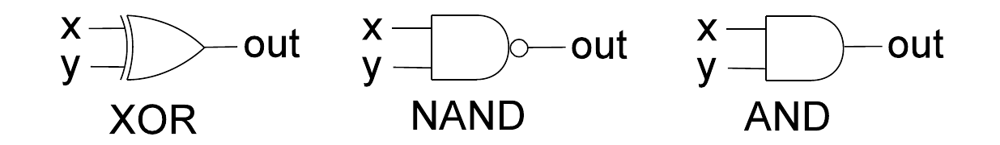
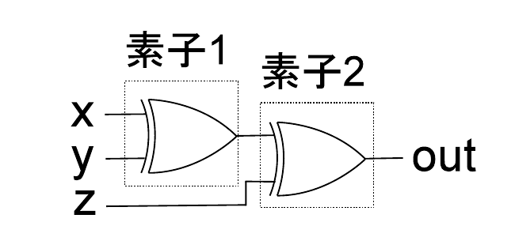
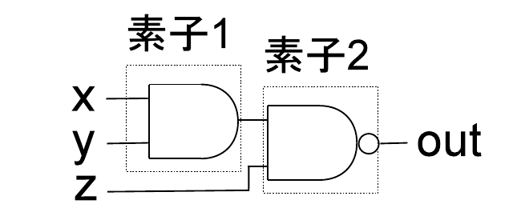

田中哲朗クラス（理科一類8,24,26組）｜7月29日（月）4限（訂正版）
プログラムシミュレータED21の機械語の命令集合の一部を以下に示す。
たとえば、プログラムシミュレータED21の機械語で書かれた以下のプログラムを考える。
| 番地 | 内容 |
|---|---|
| 0 | LOAD 1000 |
| 1 | ADD 1001 |
| 2 | STORE 1000 |
| 3 | LOAD 1001 |
| 4 | SUB 1002 |
| 5 | STORE 1001 |
| 6 | JZ 8 |
| 7 | J 0 |
| 8 | LOAD 1000 |
| 9 | STOP 0 |
| 1000 | 0 |
| 1001 | n（$1\le n\le50$） |
| 1002 | 1 |
このプログラムを0番地から実行すると、停止時にはアキュムレータに1からnまでの和が得られ、その実行ステップ数は$8n+1$である（最後のSTOP命令も実行ステップに数える）。
同様にプログラム(1)について、
を答えなさい。また、プログラム(2)はプログラム(1)と同じ計算をおこなうプログラムである。
を答えなさい。プログラム(2)はプログラム(1)と同じ計算をおこなっているにも関わらず、プログラム(1)よりも少ない実行ステップ数で計算できる。
| 番地 | 内容 |
|---|---|
| 0 | LOAD 1001 |
| 1 | ADD 1000 |
| 2 | STORE 1001 |
| 3 | LOAD 1002 |
| 4 | SUB 1003 |
| 5 | STORE 1002 |
| 6 | JZ 8 |
| 7 | J 0 |
| 8 | LOAD 1001 |
| 9 | STOP |
| 1000 | n（$0\le n\le20$） |
| 1001 | 0 |
| 1002 | 31 |
| 1003 | 1 |
| 番地 | 内容 |
|---|---|
| 0 | LOAD 1000 |
| 1 | ADD 1000 |
| 2 | STORE 1001 |
| 3 | ADD 1001 |
| 4 | STORE 1002 |
| 5 | ADD 1002 |
| 6 | STORE 1003 |
| 7 | ADD 1003 |
| 8 | ADD 1003 |
| 9 | ADD 1002 |
| 10 | ADD 1001 |
| 11 | ADD 1000 |
| 12 | STORE 1001 |
| 13 | STOP |
| 1000 | n（$0\le n\le20$） |
| 1001 | 0 |
| 1002 | 0 |
| 1003 | 0 |
プログラム(1)は何をするプログラムか。また実行ステップ数はいくつか。
導入例と同じ読み方で、番地1000〜1003の役割を確認する。1000番地は定数$n$、1001番地は累積用の変数$Y$（初期値0）、1002番地はカウンタ$Z$（初期値31）、1003番地は定数1である。ループ本体（アドレス0〜5）を1回分たどると次のようになる。
LOAD 1001（ACC$=Y$）→ ADD 1000（ACC$=Y+n$）→ STORE 1001（$Y\leftarrow Y+n$、すなわち$Y$に$n$を加算）→ LOAD 1002（ACC$=Z$）→ SUB 1003（ACC$=Z-1$）→ STORE 1002（$Z\leftarrow Z-1$）。
つまりループ1回で「$Y$に$n$を加算し、$Z$を1減らす」という処理をおこなっている。$Z$は31から始まり、JZ 8の判定で$Z=0$になった時点でループを抜けるので、このループはちょうど31回実行され、$Y$は最終的に$n\times31$になる。
プログラム(2)がプログラム(1)と同じ計算をおこなっていることを説明せよ。また実行ステップ数はいくつか。
アドレス0から順にアキュムレータの値をトレースする。
最終的にACCは$31n$となり、プログラム(1)と同じ結果になる。
説明の骨子：プログラム(2)は「2倍を繰り返す」ことで$n\to2n\to4n\to8n$という値の系列を作り出し、それらの必要な組み合わせを最後に一直線に加算することで$31n$を得ている。ちょうど$31=16+8+4+2+1$（2進数で$11111_2$）という2進展開に対応する部分和を、ループを一切使わずに順番に加え合わせている、と説明できる。
プログラム(1),(2)と同じ計算をおこない、実行ステップ数がプログラム(2)よりも小さいプログラムを作成しなさい。
$31n=32n-n$と考えれば、「2倍を5回繰り返して$32n$を作り、そこから$n$を引く」だけで済む。$32=2^5$なので2倍は5回でよく、プログラム(2)より少ない命令数になる。
| 番地 | 内容 |
|---|---|
| 0 | LOAD 1000 |
| 1 | ADD 1000 |
| 2 | STORE 1001 |
| 3 | ADD 1001 |
| 4 | STORE 1001 |
| 5 | ADD 1001 |
| 6 | STORE 1001 |
| 7 | ADD 1001 |
| 8 | STORE 1001 |
| 9 | ADD 1001 |
| 10 | SUB 1000 |
| 11 | STOP |
| 1000 | n（$0\le n\le20$） |
| 1001 | （初期値不要、最初に書き込むため） |
トレース：LOAD 1000（ACC$=n$）→ ADD 1000（ACC$=2n$）→ STORE 1001（$Y=2n$）→ ADD 1001（ACC$=2n+2n=4n$）→ STORE 1001（$Y=4n$）→ ADD 1001（ACC$=8n$）→ STORE 1001（$Y=8n$）→ ADD 1001（ACC$=16n$）→ STORE 1001（$Y=16n$）→ ADD 1001（ACC$=32n$）→ SUB 1000（ACC$=32n-n=31n$）→ STOP。
この一連の設問（プログラム(1)→(2)→(e)）は、「ループによる繰り返し加算」（$Z$を1つずつ減らしながら31回加算する、$O(n)$回のループ）から、「2倍を繰り返す方法」（$O(\log n)$回の操作だけで済む、いわゆる倍々計算）への改良を体験させる問題である。$31n$を計算するのに31回足すのではなく、$n\to2n\to4n\to8n\to16n\to32n$という2倍の系列を作り、そこから必要な項を選んで加える（あるいは(e)のように$32n-n$として引く）ことで、計算量を大きく減らせる。これは計算機科学で頻出する「繰り返し二乗法（exponentiation by squaring）」的な発想——ある操作を繰り返し2倍していくことで、線形時間の計算を対数時間に短縮する——の入門的な例になっている。
以下の図は3つの基本素子XOR, NAND, ANDをMIL記法で表したものである。

これらの基本素子の真理値表は以下のように表される。
| x | y | XOR(x,y) | NAND(x,y) | AND(x,y) |
|---|---|---|---|---|
| 0 | 0 | 0 | 1 | 0 |
| 0 | 1 | 1 | 1 | 0 |
| 1 | 0 | 1 | 1 | 0 |
| 1 | 1 | 0 | 0 | 1 |
これらの素子のうちXORを2つ組み合わせて以下の図のように、3入力(x,y,z)で1出力(out)の組み合わせ回路を作成した。

素子1の出力を$m$とすると$m=\mathrm{XOR}(x,y)=x\oplus y$、そして$\mathrm{out}=\mathrm{XOR}(m,z)=x\oplus y\oplus z$となる。XORは「入力のうち1の個数が奇数なら1」という性質を持つ演算なので、2つのXORを直列につなぐと、3入力全体で「1の個数が奇数なら1」を判定する奇数パリティ関数が得られる。この考え方を拡張すれば、XORをさらに直列に繋いでいくことで、任意個の入力についてのパリティ（1の個数の偶奇）を計算する回路を作れる。
この回路の真理値表を書きなさい。
各行について、まず素子1の出力$m=\mathrm{XOR}(x,y)$を計算し、次に$\mathrm{out}=\mathrm{XOR}(m,z)$を計算する。
結果を見ると、$x,y,z$のうち1の個数が奇数（1個または3個）のときちょうどout=1になっており、冒頭のnoteで述べた「奇数パリティ」と一致する。
| x | y | z | m（素子1出力） | out |
|---|---|---|---|---|
| 0 | 0 | 0 | 0 | 0 |
| 0 | 0 | 1 | 0 | 1 |
| 0 | 1 | 0 | 1 | 1 |
| 0 | 1 | 1 | 1 | 0 |
| 1 | 0 | 0 | 1 | 1 |
| 1 | 0 | 1 | 1 | 0 |
| 1 | 1 | 0 | 0 | 0 |
| 1 | 1 | 1 | 0 | 1 |
回路の「素子1」、「素子2」の位置にある基本素子を取り換えると、同じ入力に対して、異なる出力が得られるようになる。基本素子を取り換える操作を以下のように定義する。
たとえば、「素子1」、「素子2」共にXORの回路である開始状態から「A」「A」「C」「B」という操作をおこなった後の回路は、以下の図のようになる。

「状態」を回路として、「入力」をA〜Dの操作とすると、オートマトン（有限状態機械）と見なすことができる。$\{x=1,y=1,z=0\}$という入力に対する出力がout=1となる回路を終了状態として、このオートマトン（有限状態機械）を図示しなさい。
操作A,A,C,Bの検証：開始状態（素子1=XOR, 素子2=XOR）に、A（素子1→NAND）、A（素子1→NAND、変化なし）、C（素子2→NAND）、B（素子1→AND）を順に適用すると、最終的に素子1=AND、素子2=NANDになり、これは掲載図（circuit-modified.png）と一致する。ここで重要なのは、A,B,C,Dは「その位置の素子をXORから別の素子に切り替える」という一方的な指定操作であり、トグル（前の状態を反転させる）ではないという点である。つまり、素子1に何度A,Bを押してもその位置の素子は最後に押したA/Bで決まり（AならNAND、BならAND）、同様に素子2はC/Dのうち最後に押した方で決まる。したがって回路の「状態」は、素子1の値（XOR/NAND/AND）と素子2の値（XOR/NAND/AND）の組だけで決まり、押した順番やそれ以前の操作の履歴には依存しない。
状態数：素子1、素子2はそれぞれ独立に{XOR,NAND,AND}の3通りの値を取りうる（A,Bで素子1をNAND/ANDに、C,Dで素子2をNAND/ANDに設定できるが、いずれの操作も一度NANDやANDにした後にXORへ戻すことはできない）ので、回路全体の「状態」は$3\times3=9$通り考えられる。
終了状態（受理状態）の判定：$\{x=1,y=1,z=0\}$を入力したときの出力を9状態すべてについて計算する。まず素子1の出力（$x=1,y=1$を入力）は、$\mathrm{XOR}(1,1)=0$、$\mathrm{NAND}(1,1)=0$、$\mathrm{AND}(1,1)=1$。次に素子2の出力（素子1の出力と$z=0$を入力）は、素子1出力が0の場合$\mathrm{XOR}(0,0)=0$、$\mathrm{NAND}(0,0)=1$、$\mathrm{AND}(0,0)=0$、素子1出力が1の場合$\mathrm{XOR}(1,0)=1$、$\mathrm{NAND}(1,0)=1$、$\mathrm{AND}(1,0)=0$。これらを組み合わせて9通り全てのoutを求める。
| 素子1＼素子2 | XOR | NAND | AND |
|---|---|---|---|
| XOR | out=0 | out=1 | out=0 |
| NAND | out=0 | out=1 | out=0 |
| AND | out=1 | out=1 | out=0 |
したがって、終了状態（受理状態）となるのは4つの回路状態：(XOR,NAND)、(NAND,NAND)、(AND,XOR)、(AND,NAND)である。残り5状態（(XOR,XOR)、(XOR,AND)、(NAND,XOR)、(NAND,AND)、(AND,AND)）は非終了状態（非受理状態）となる。
遷移規則：状態を(素子1,素子2)の組で表すと、操作の効果は次のように単純である。
開始状態は(XOR,XOR)。この9状態を素子1（行）×素子2（列）の$3\times3$のグリッドとして図示し、受理状態を上表のように太字でマークすれば、オートマトンの図（状態遷移図）に相当する情報を明快に表せる。各状態から、A,Bの矢印は同じ行の中で列を保ったまま「NAND列」「AND列」へ、C,Dの矢印は同じ列の中で行を保ったまま「NAND行」「AND行」へ向かう、という規則的な構造を持つ（XOR行・XOR列へ戻る矢印は存在しない）。
この問題の面白さは、回路そのものの入出力（x,y,z→out）ではなく、回路の構成（どの位置にどの素子が入っているか）を「状態」とみなし、素子を取り換える操作を「入力」とみなすことで、論理回路という全く別の対象にもオートマトンの枠組みをそのまま適用できる点にある。オートマトンの状態は文字列の読み取り位置や暗証番号の一致状況である必要はなく、任意の「現在の構成」を状態として抜き出せば良い、という抽象化の考え方を体験できる設問になっている。個別問題1で見たED21のプログラム比較（ループ的な繰り返し加算 vs 倍々計算）もまた、同じ計算対象（$31n$を求めること）を異なる手法・異なる視点から捉え直す発想であり、「同じ問題を複数の見方で表現し直す」ことがこの科目全体を通じたテーマの一つになっている。